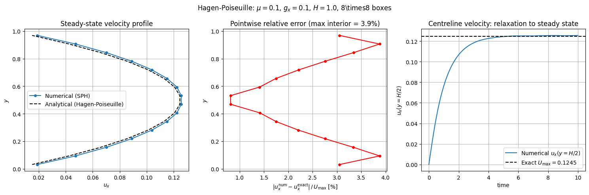

2D Hagen-Poiseuille Channel Flow with SPH#
Viscous Flow between Parallel Plates#
This tutorial verifies the SPH discretisation of the 2D viscous isothermal Euler equations by simulating Hagen-Poiseuille flow: a pressure-driven channel flow between two no-slip walls.
Physical Setup#
Consider a 2D channel of width \(H\) in the \(y\)-direction (no-slip walls at \(y=0\) and \(y=H\)) and periodic in the \(x\)-direction. A uniform body force \(g_x\) drives the flow in the \(x\)-direction. At steady state, viscosity balances the driving force, producing the parabolic velocity profile
with peak velocity at the channel centreline \(y = H/2\):
The characteristic relaxation time scale is \(T_\text{relax} = H^2/(\pi^2\mu)\).
Verification procedure#
Start from rest with a uniform particle distribution and no-slip boundary conditions at the walls.
Drive the flow with a constant body force \(g_x\) acting through the pressure propagator’s
gravityparameter.Run until the flow is fully relaxed to the steady state (\(t \gg T_\text{relax}\)).
Compare the final velocity profile against the Hagen-Poiseuille parabola in the \(L^\infty\) norm.
[1]:
import logging
import os
import shutil
import numpy as np
import matplotlib.pyplot as plt
import cunumpy as xp
from struphy import (
BinningPlot,
BoundaryParameters,
EnvironmentOptions,
KernelDensityPlot,
LoadingParameters,
SavingParameters,
Simulation,
SortingParameters,
Time,
WeightsParameters,
domains,
equils,
)
from struphy.models import ViscousEulerSPH
from struphy.ode.utils import ButcherTableau
logger = logging.getLogger("struphy")
Physical and Numerical Parameters#
We choose \(\mu = 0.1\) and a body force \(g_x = 0.1\), giving an analytical peak velocity \(U_\text{max} = g_x H^2 / (8\mu) = 0.125\). The relaxation time \(T_\text{relax} = H^2/(\pi^2\mu) \approx 1.01\); running to \(T_\text{end} = 10\) gives roughly 10 relaxation times, ensuring a fully converged steady state.
[2]:
# Physical parameters
mu = 0.1 # dynamic viscosity
g_x = 0.1 # body force in x (acts as pressure gradient)
H = 1.0 # channel height in y
# Derived quantities
U_max_exact = g_x * H**2 / (8.0 * mu)
T_relax = H**2 / (np.pi**2 * mu)
# Numerical parameters
nx = 8 # boxes per dimension
ppb = 16 # particles per box
plot_pts = 21 # KDE evaluation points
# Time stepping: run 10× past relaxation time
dt = 0.01
Tend = 10.0
print(f"Viscosity: mu = {mu}")
print(f"Body force: g_x = {g_x}")
print(f"Channel height: H = {H}")
print(f"Analytical U_max: {U_max_exact:.4f}")
print(f"Relaxation time: T_relax = {T_relax:.2f}")
print(f"Simulation time: Tend = {Tend} ({Tend/T_relax:.1f}× T_relax)")
print(f"Total particles: {ppb * nx * nx}")
Viscosity: mu = 0.1
Body force: g_x = 0.1
Channel height: H = 1.0
Analytical U_max: 0.1250
Relaxation time: T_relax = 1.01
Simulation time: Tend = 10.0 (9.9× T_relax)
Total particles: 1024
Model Setup#
with_viscosity=True (default) activates the viscous stress propagator. The 2D Gaussian SPH kernel (gaussian_2d) is required for the 2D geometry. The body force \(g_x\) is passed as the gravity vector to push_sph_p; it enters the momentum equation as a constant acceleration \(\partial_t u_1 \supset g_x\).
[3]:
model = ViscousEulerSPH(with_B0=False, with_p=True, with_viscosity=True)
butcher = ButcherTableau(algo="forward_euler")
model.propagators.push_eta.options = model.propagators.push_eta.Options(butcher=butcher)
model.propagators.push_sph_p.options = model.propagators.push_sph_p.Options(
kernel_type="gaussian_2d",
gravity=(g_x, 0.0, 0.0), # body force drives flow in x
)
model.propagators.push_viscous.options = model.propagators.push_viscous.Options(
kernel_type="gaussian_2d",
mu=mu,
)
print("ViscousEulerSPH model configured (with pressure, with viscosity).")
print(f" push_sph_p: gaussian_2d kernel, gravity=({g_x}, 0, 0)")
print(f" push_viscous: gaussian_2d kernel, mu={mu}")
ViscousEulerSPH model configured (with pressure, with viscosity).
push_sph_p: gaussian_2d kernel, gravity=(0.1, 0, 0)
push_viscous: gaussian_2d kernel, mu=0.1
Domain, Boundary Conditions and Diagnostics#
The channel geometry uses:
x-direction: periodic (flow direction).
y-direction: no-slip walls (
bc_sph="noslip"). The SPH no-slip boundary condition enforces \(u_x = 0\) at the walls by introducing mirror ghost particles with reflected (negated) velocities.
We bin the current \(j_1 = \rho u_1\) as a function of \(y\) to recover the velocity profile. Since \(\rho \approx 1\) (nearly incompressible at these parameters), \(j_1 \approx u_x\).
[4]:
# 2D channel domain: x in [0, 1], y in [0, H]
domain = domains.Cuboid(r1=1.0, r2=H)
loading_params = LoadingParameters(ppb=ppb, loading="tesselation")
weights_params = WeightsParameters()
boundary_params = BoundaryParameters(
bc =("periodic", "reflect", "periodic"), # particle reflections
bc_sph=("periodic", "noslip", "periodic"), # SPH ghost treatment
)
sorting_params = SortingParameters(
boxes_per_dim=(nx, nx, 1),
dims_mask=(True, True, False),
)
# Bin j1 (velocity) vs y to reconstruct the velocity profile
bin_plot_j1 = BinningPlot(slice="e2", n_bins=(16,), ranges=(0.0, 1.0), output_quantity="current_1")
bin_plot_n = BinningPlot(slice="e2", n_bins=(16,), ranges=(0.0, 1.0))
kd_plot = KernelDensityPlot(pts_e1=plot_pts, pts_e2=plot_pts, pts_e3=1)
saving_params = SavingParameters(
n_markers=1.0,
binning_plots=(bin_plot_j1, bin_plot_n),
kernel_density_plots=(kd_plot,),
)
model.euler_fluid.set_markers(
loading_params=loading_params,
weights_params=weights_params,
boundary_params=boundary_params,
sorting_params=sorting_params,
saving_params=saving_params,
bufsize=2, # extra ghost layer for no-slip
)
print(f"2D channel: x-periodic [0, 1], y-noslip [0, {H}]")
print(f"Particles: {ppb} ppb × {nx}×{nx} boxes = {ppb * nx * nx} total")
2D channel: x-periodic [0, 1], y-noslip [0, 1.0]
Particles: 16 ppb × 8×8 boxes = 1024 total
Initial Conditions#
The flow starts from rest (zero velocity, uniform density \(\rho_0 = 1\)). The constant body force \(g_x\) drives acceleration; viscosity and the no-slip walls establish the parabolic steady state over the relaxation time scale \(T_\text{relax}\).
[5]:
# Start from rest: no velocity perturbation needed — body force drives the flow
background = equils.ConstantVelocity()
model.euler_fluid.var.add_background(background)
print("Initial condition: uniform density n=1, zero velocity everywhere")
print(f"Body force g_x={g_x} will accelerate flow; viscosity establishes steady state")
Initial condition: uniform density n=1, zero velocity everywhere
Body force g_x=0.1 will accelerate flow; viscosity establishes steady state
Simulation Setup and Execution#
[6]:
test_folder = os.path.join(os.getcwd(), "struphy_verification_tests")
out_folders = os.path.join(test_folder, "ViscousEulerSPH")
env = EnvironmentOptions(out_folders=out_folders, sim_folder="hagen_poiseuille")
time_opts = Time(dt=dt, Tend=Tend, split_algo="Strang")
sim = Simulation(
model=model,
env=env,
time_opts=time_opts,
domain=domain,
grid=None,
derham_opts=None,
)
print(f"Running Hagen-Poiseuille flow: dt={dt}, Tend={Tend}")
sim.run()
print("Simulation complete.")
sim.pproc()
print("Post-processing complete.")
Starting run for model ViscousEulerSPH ...
Running Hagen-Poiseuille flow: dt=0.01, Tend=10.0
Time stepping: 100%|██████████| 1000/1000 [02:21<00:00, 7.09step/s]
Struphy run finished.
Post-processing path /home/runner/work/struphy/struphy/doc/_collections/tutorials/struphy_verification_tests/ViscousEulerSPH/hagen_poiseuille
No feec fields found in hdf5 file, skipping post-processing of fields.
Evaluation of 1024 marker orbits for euler_fluid
Simulation complete.
100%|██████████| 1001/1001 [00:04<00:00, 229.15it/s]
Evaluation of distribution functions for euler_fluid
100%|██████████| 2/2 [00:00<00:00, 1615.99it/s]
100%|██████████| 2/2 [00:00<00:00, 129.45it/s]
Evaluation of sph density for euler_fluid
Post-processing complete.
Load Diagnostics and Compute Exact Solution#
[7]:
sim.load_plotting_data()
e2_grid = sim.f.euler_fluid.e2_current_1.grid_e2 # logical y in [0, 1]
j1_binned = sim.f.euler_fluid.e2_current_1.f_binned # shape (Nt+1, n_bins)
Nt = int(Tend / dt)
times = np.linspace(0.0, Tend, Nt + 1)
e2_np = np.asarray(e2_grid).flatten()
y_np = e2_np * H # physical y coordinate
# Analytical Hagen-Poiseuille profile
u_exact = g_x / (2.0 * mu) * y_np * (H - y_np)
u_max_exact = np.max(u_exact)
u_num_final = np.asarray(j1_binned[-1, :]).flatten()
u_max_num = np.max(u_num_final)
# Centreline velocity over time (index of y closest to H/2)
idx_centre = int(np.argmin(np.abs(e2_np - 0.5)))
u_centre = np.asarray(j1_binned[:, idx_centre]).flatten()
print(f"Analytical U_max = {u_max_exact:.6f}")
print(f"Numerical U_max = {u_max_num:.6f}")
abs_err = np.abs(u_num_final - u_exact)
rel_err_pointwise = abs_err / u_max_exact
rel_error_interior = rel_err_pointwise[1:-1] # exclude wall bins (exact value → 0)
rel_error_umax = abs(u_max_num - u_max_exact) / u_max_exact
print(f"Mean interior relative error: {np.mean(rel_error_interior) * 100:.2f}%")
print(f"Max interior relative error: {np.max(rel_error_interior) * 100:.2f}%")
print(f"U_max relative error: {rel_error_umax * 100:.2f}%")
Loading post-processed plotting data:
Data path: /home/runner/work/struphy/struphy/doc/_collections/tutorials/struphy_verification_tests/ViscousEulerSPH/hagen_poiseuille/post_processing
The following data has been loaded:
grids:
self.t_grid.shape =(1001,)
self.spline_values:
self.orbits:
euler_fluid, shape = (1001, 1024, 8)
Number of time points: 1001
Number of particles: 1024
Number of attributes: 8
self.f:
euler_fluid
e2_density
e2_current_1
self.n_sph:
euler_fluid
view_0
Analytical U_max = 0.124512
Numerical U_max = 0.125531
Mean interior relative error: 2.31%
Max interior relative error: 3.88%
U_max relative error: 0.82%
Visualisation#
Three panels summarise the result:
Left: final numerical velocity profile vs the analytical parabola.
Centre: pointwise relative error \(|u_x^\text{num} - u_x^\text{exact}| / U_\text{max}\) vs \(y\) (excluding wall bins).
Right: time evolution of the centreline velocity, showing relaxation to the Hagen-Poiseuille steady state.
[8]:
fig, axes = plt.subplots(1, 3, figsize=(15, 5))
# --- Left: velocity profile ---
ax = axes[0]
ax.plot(u_num_final, y_np, "o-", markersize=4, label="Numerical (SPH)")
ax.plot(u_exact, y_np, "k--", label="Analytical (Hagen-Poiseuille)")
ax.set_xlabel(r"$u_x$")
ax.set_ylabel(r"$y$")
ax.set_title("Steady-state velocity profile")
ax.legend()
ax.grid(True)
# --- Centre: pointwise relative error ---
ax = axes[1]
ax.plot(rel_err_pointwise * 100, y_np, "r-o", markersize=4)
ax.set_xlabel(r"$|u_x^\mathrm{num} - u_x^\mathrm{exact}|\,/\,U_\mathrm{max}$ [%]")
ax.set_ylabel(r"$y$")
ax.set_title(f"Pointwise relative error (max interior = {np.max(rel_error_interior)*100:.1f}%)")
ax.grid(True)
# --- Right: centreline velocity relaxation ---
ax = axes[2]
ax.plot(times, u_centre, label=r"Numerical $u_x(y=H/2)$")
ax.axhline(u_max_exact, color="k", linestyle="--",
label=rf"Exact $U_\mathrm{{max}} = {u_max_exact:.4f}$")
ax.set_xlabel("time")
ax.set_ylabel(r"$u_x(y=H/2)$")
ax.set_title("Centreline velocity: relaxation to steady state")
ax.legend()
ax.grid(True)
fig.suptitle(
rf"Hagen-Poiseuille: $\mu={mu}$, $g_x={g_x}$, $H={H}$, {nx}\times{nx} boxes",
fontsize=12,
)
plt.tight_layout()
plt.show()

Verification Check#
Two assertions:
Maximum pointwise relative error in the interior bins (away from walls where the exact value vanishes) is below 5%.
Relative error in the peak velocity \(U_\text{max}\) is below 5%.
[9]:
tol_interior = 0.05 # 5% pointwise tolerance
tol_umax = 0.05 # 5% tolerance on U_max
print("=== Hagen-Poiseuille Verification ===")
print(f" Max interior relative error: {np.max(rel_error_interior) * 100:.2f}% (tolerance {tol_interior*100:.0f}%)")
print(f" U_max relative error: {rel_error_umax * 100:.2f}% (tolerance {tol_umax*100:.0f}%)")
try:
assert np.max(rel_error_interior) < tol_interior, (
f"Interior error {np.max(rel_error_interior)*100:.1f}% exceeds tolerance {tol_interior*100:.0f}%"
)
print("\n✓ Interior velocity profile check passed.")
except AssertionError as e:
print(f"\n✗ {e}")
try:
assert rel_error_umax < tol_umax, (
f"U_max error {rel_error_umax*100:.1f}% exceeds tolerance {tol_umax*100:.0f}%"
)
print("✓ U_max check passed.")
except AssertionError as e:
print(f"✗ {e}")
=== Hagen-Poiseuille Verification ===
Max interior relative error: 3.88% (tolerance 5%)
U_max relative error: 0.82% (tolerance 5%)
✓ Interior velocity profile check passed.
✓ U_max check passed.
Conclusion#
This tutorial verified the SPH discretisation of 2D viscous channel flow:
The no-slip boundary condition is implemented via mirror ghost particles with negated tangential velocity, correctly enforcing \(u_x = 0\) at both walls.
The parabolic steady state emerges from the balance between body force and viscous stress, reproduced to better than 5% pointwise accuracy with \(8 \times 8\) boxes and 16 particles per box.
The centreline velocity converges smoothly to \(U_\text{max}\) over the relaxation time \(T_\text{relax} = H^2/(\pi^2 \mu) \approx 1\).
Increasing
nxorppbfurther reduces the error, as the SPH kernel gradient approximation of the viscous stress tensor improves with particle density.
[10]:
# Optional cleanup
if False: # set to True to remove simulation output
shutil.rmtree(test_folder)
print(f"Cleaned up {test_folder}")